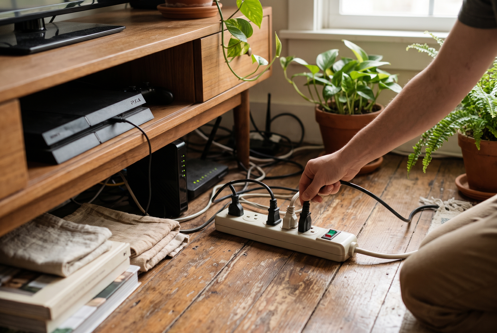

10 ukrytych pożeraczy prądu w Twoim domu
Autor: Redakcja EkoDom | Opublikowano: 28 stycznia 2026

Wampiry energetyczne w Twoim salonie
Nawet wyłączone urządzenia, jeśli pozostają podpięte do gniazdek zasilających, pobierają prąd na podtrzymanie zegarów, diod czy gotowości do szybkiego startu.